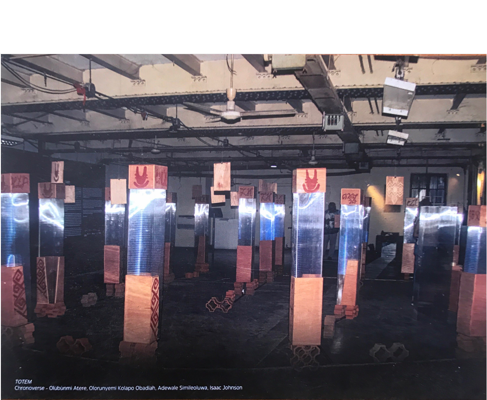

Fluid Earth
2025 · GroundWork Gallery · Norfolk, UK
2025 · GroundWork Gallery · Norfolk, UK
A three-work body of digital prints developed through the GroundWork artists’ residency, addressing oil pollution, water, time and the Niger Delta.
Projects
Bodies of work, exhibitions and collaborative projects that provide a wider context for the individual works.
